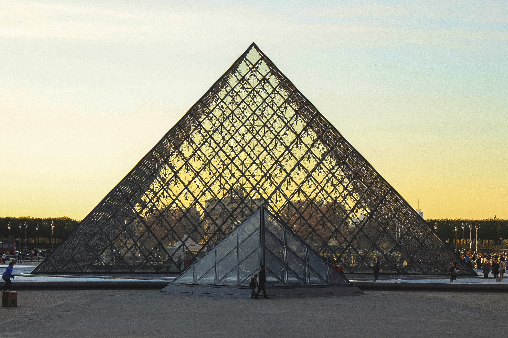

Весь мир как наглядная геометрия
Геометрия в природе
Ученые придерживаются мнения о том, что все, что создается человеком, создается на основе наблюдений за окружающей человека природой.
Значит и геометрические фигуры нужно искать в природе.
Теперь и прогулки по лесу были посвящены поиску геометрических фигур.
Стволы деревьев - цилиндры, шляпка гриба - полушар, ель - конус. А на одном из деревьев висело сорочье гнездо - шар, свитый из веток.
Аналоги кубу и параллелепипеду нашлись в неживой природе. Например, кристаллы соли имеют форму куба.
Эксперименты еще раз подтвердили, что именно окружающая человека природа подсказала людям основные геометрические формы.
Фигуры, созданные природой, не только красивы, их форма целесообразна, то есть наиболее удобна.
А человеку остается только учиться у природы - самого гениального изобретателя.
Геометрия в архитектуре
Форма и структура зданий: Геометрические принципы определяют форму и структуру зданий.
Различные геометрические фигуры,
такие как круги, квадраты, треугольники, используются для создания уникальных архитектурных элементов и композиций.
Пропорции и соотношения: Гармоничные пропорции и соотношения, основанные на геометрии, помогают создавать эстетически приятные и сбалансированные здания.
Золотое сечение и другие математические принципы используются для достижения визуального равновесия.
Геометрические узоры и декорации: Геометрические узоры, решетки, арки, купола — все это является частью архитектурного декора, который основан на геометрии.
Эти элементы придают зданиям уникальный стиль и характер.
Строительные технологии: Геометрические расчеты используются для определения прочности и устойчивости конструкций.
Использование геометрических форм помогает оптимизировать материалы и конструкции зданий.
Экологически устойчивая архитектура: Геометрия также играет роль в разработке экологически устойчивых зданий.
Например, использование геометрических принципов для оптимизации естественного освещения, вентиляции и теплоизоляции способствует созданию энергоэффективных зданий.

Геометрия в технологиях
Конструирование и дизайн: Геометрия используется при проектировании и создании различных объектов и механизмов,
таких как автомобили, самолеты, здания, мосты и другие инженерные сооружения.
Геометрические принципы помогают оптимизировать форму и структуру объектов для повышения эффективности и прочности.
Компьютерная графика: Геометрия является основой компьютерной графики и визуализации.
Технологии трассировки лучей, трехмерного моделирования, анимации и виртуальной реальности основаны
на геометрических принципах для создания реалистичных изображений и симуляций.
Криптография: В криптографии геометрия используется для разработки алгоритмов шифрования и защиты информации.
Например, эллиптическая кривая — это математическая структура, которая широко применяется в современных криптографических системах.
Производство и инженерия: Геометрическое моделирование используется в производственных технологиях,
таких как 3D-печать, ЧПУ-станки, лазерная резка и другие методы производства. Геометрические модели помогают создавать точные и сложные детали и изделия.
Исследования и разработки: В научных исследованиях геометрия используется для анализа данных, моделирования явлений, оптимизации процессов и решения сложных задач в различных областях, от физики до биологии.
Таким образом, геометрия играет ключевую роль в развитии технологий, обеспечивая основу для инноваций и улучшений в различных отраслях и областях человеческой деятельности.
Геометрия в науке
Геометрия играет важную роль в науке, проявляясь в различных областях и способствуя развитию научных знаний. Вот несколько способов, как геометрия влияет на науку:
Физика: В физике геометрия используется для описания и понимания пространственной структуры и движения объектов.
Например, геометрические принципы применяются для моделирования траекторий движения тел, описания формы молекул и кристаллической структуры материалов.
Математика: Геометрия является ключевой частью математики и играет решающую роль в различных областях,
таких как алгебра, топология, геометрическая оптика и дифференциальная геометрия.
Она помогает ученым изучать пространственные отношения, формы, симметрии и многие другие математические концепции.
Космология и астрономия: В изучении космоса геометрия играет важную роль при анализе структуры вселенной,
распределения галактик, траекторий планет и других небесных объектов.
Биология: В биологии геометрия используется для изучения структуры биологических объектов, таких как молекулы ДНК,
белковые структуры, клеточные органеллы и ткани.
Инженерные науки: Геометрические принципы применяются в инженерных науках для разработки и анализа различных систем и конструкций, таких как механизмы,
электрические цепи, оптические системы и многие другие.
Таким образом, геометрия является важным инструментом для научных исследований во многих областях, помогая ученым понимать и описывать мир вокруг нас с помощью математических моделей и концепций.